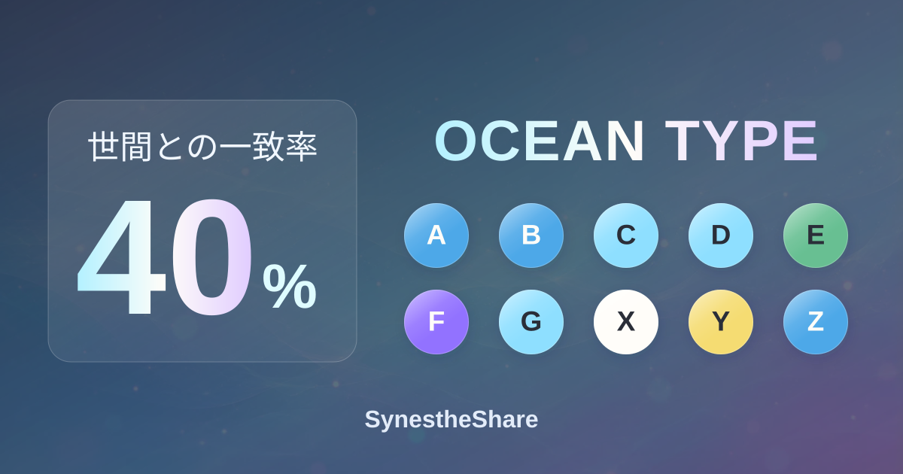
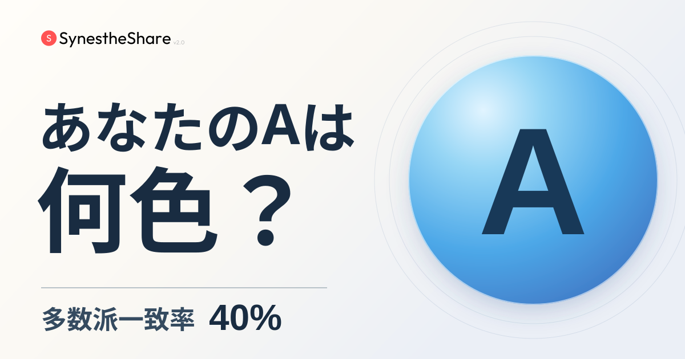
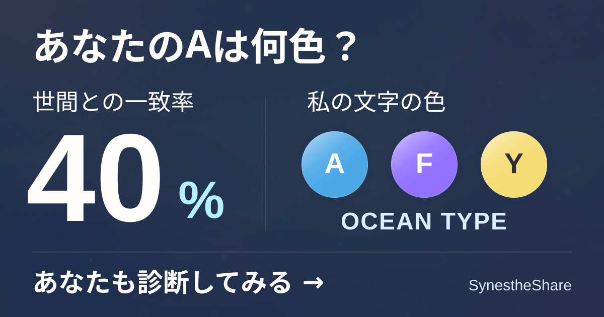
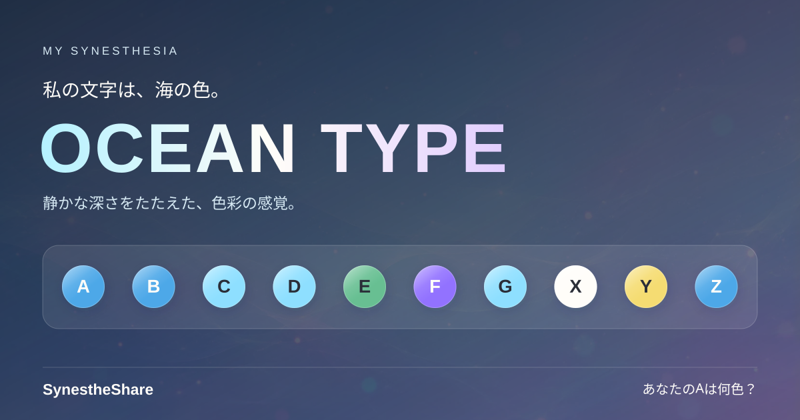
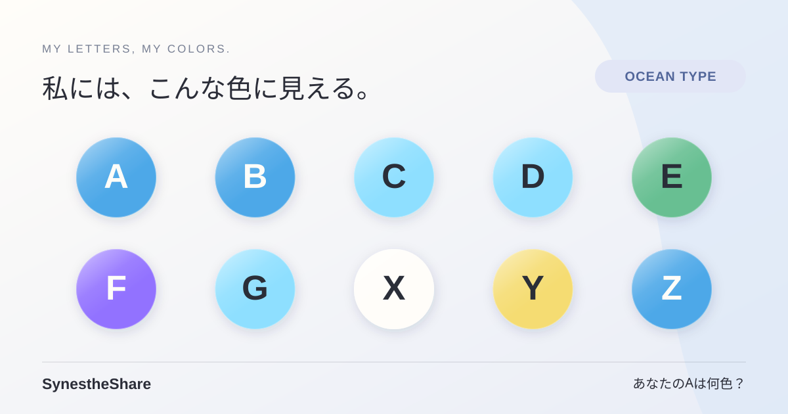
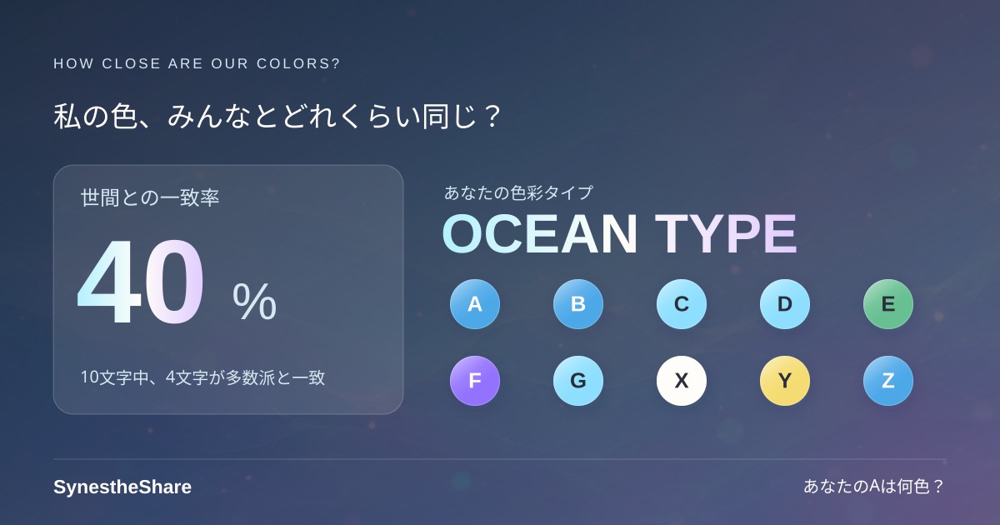

SynestheShare / DESIGN STUDIES
共有したくなる、あなたの色。
同じ10文字の回答を、3つの方向でデザイン。すべて1200 × 630の比較用モックです。
OCEAN TYPE / 回答コード：5566476C25。一致率40%は既存のダミー統計で計算した参考値です。
本番のOGP生成・共有機能にはまだ反映していません。
08
案③をベースにした結果カード

タイプ別の背景に、一致率・タイプ名・10文字の配色を配置。数値はサンプル回答とダミー統計による参考値です。 原寸で開く ↗
タイムライン程度の幅で確認（最大600px）
07
私の文字の色

OCEAN TYPEの海に、回答した10文字をひと続きの波として浮かべた結果カード。 原寸で開く ↗
タイムライン程度の幅で確認（最大600px）
06
あなたのAは何色？

投稿者が選んだAの色を、大きなひとつの円で見せます。一致率は全回答の結果です。 原寸で開く ↗
タイムライン程度の幅で確認（最大600px）
05
スマホ優先：読める情報に絞る

見出し・一致率・診断への誘いを大きく。文字の色は3つだけ抜粋し、細かい説明とボタン風の装飾を省きました。360px幅では見出し約23px、一致率の数値約74px、誘導文約16pxになります。 原寸で開く ↗
タイムライン程度の幅で確認（最大600px）
04
③の改良案：自分も試したくなる結果カード

SNSでの拡散を目指す案。問いかけ、一致率、自分のパレット、診断への誘いの順で構成。OGP画像全体をクリックして共有結果へ進み、結果ページの「自分も診断する」から新しい回答を始める想定です。画像内の誘導は独立したボタンではありません。 原寸で開く ↗
タイムライン程度の幅で確認（最大600px）
01
世界観を届ける

既存の海の背景を深い色に重ね、大きなタイプ名を主役に。文字のパレットで、その人だけの結果も伝えます。おすすめの方向です。 原寸で開く ↗
タイムライン程度の幅で確認（最大600px）
02
私のパレットを見せる

明るい余白に、大きなガラスの色円。文字と色の組み合わせが最も読みやすく、ほかの人と見比べたくなる方向です。 原寸で開く ↗
タイムライン程度の幅で確認（最大600px）
03
みんなとの違いを伝える

一致率を大きく見せ、比較したくなるきっかけをつくる方向。数値は参考表示で、実装時には統計の取得状態を考慮します。 原寸で開く ↗
タイムライン程度の幅で確認（最大600px）